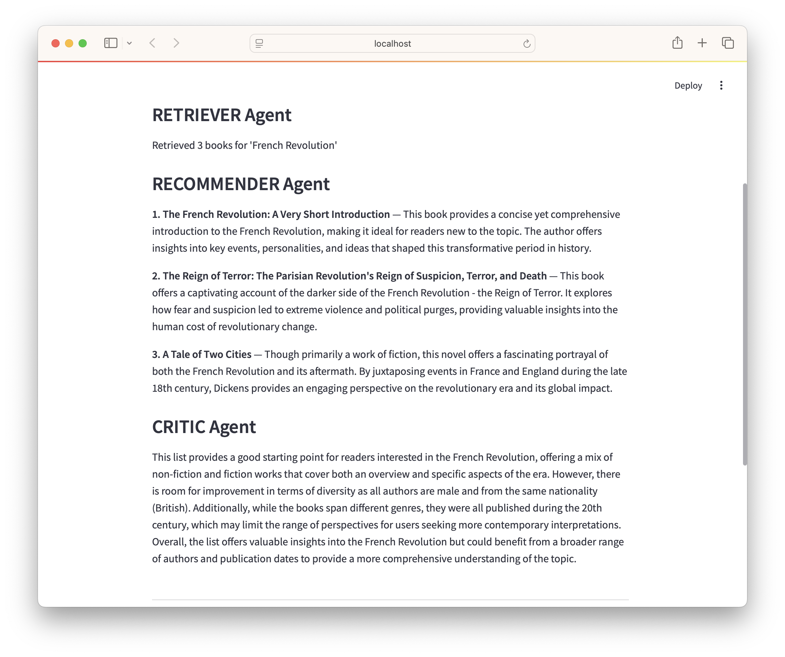
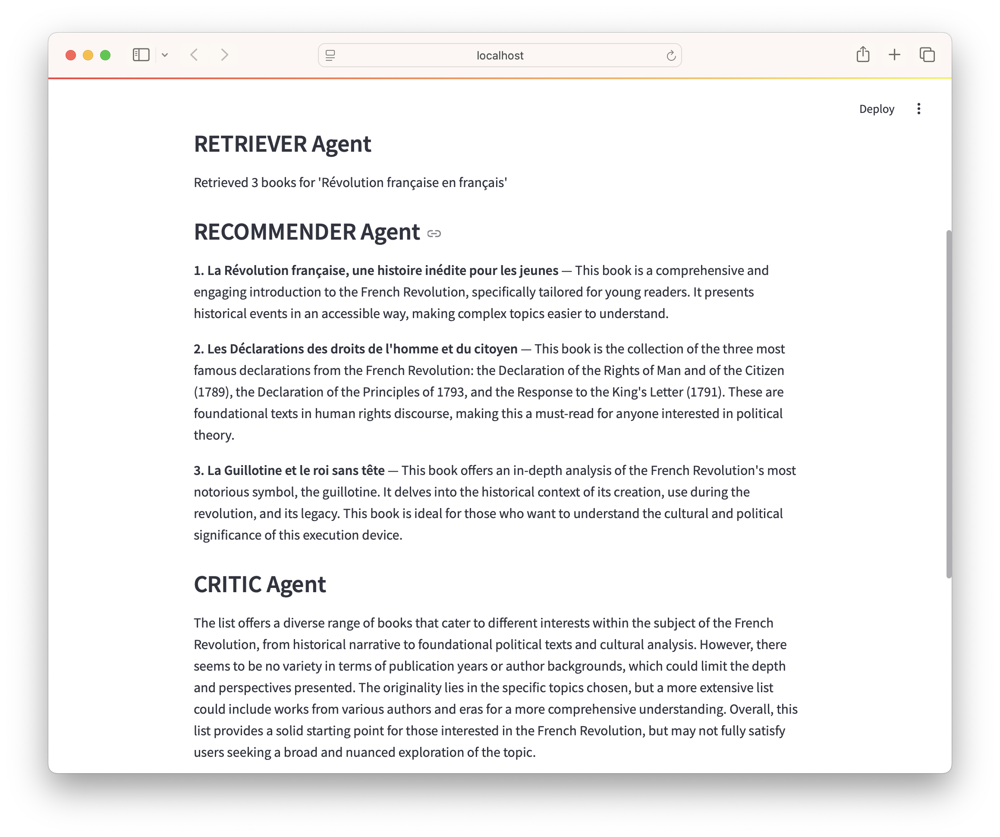
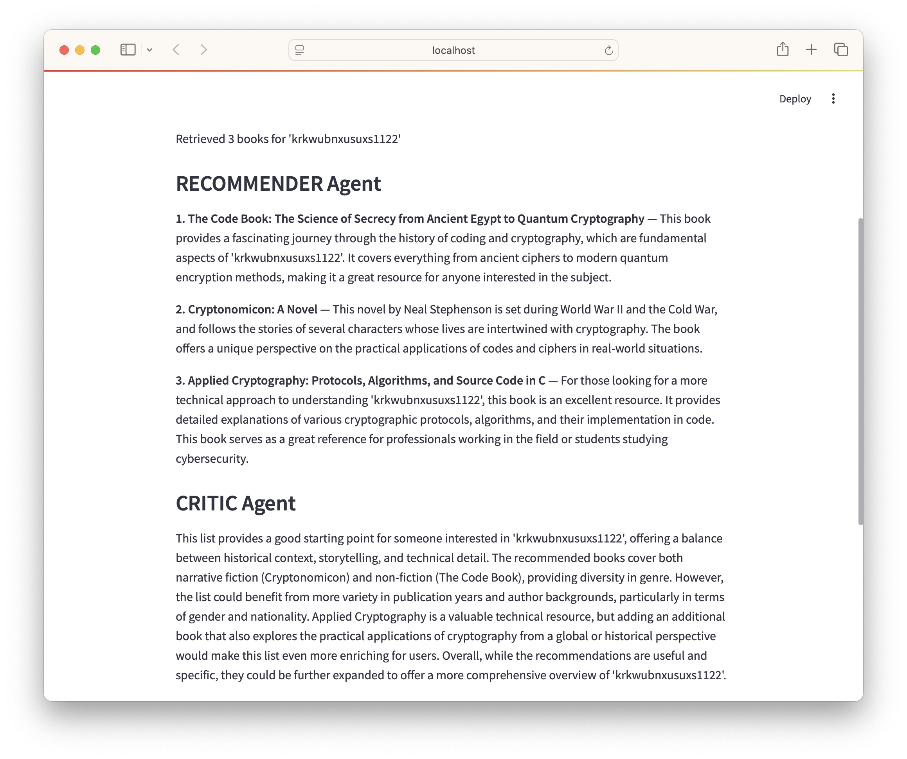

A practical agent system built locally, toggleable with OpenAI, multilingual by design.
Motivation
BookRecommender is a system of chained modular agents powered by an underlying large language model (LLM) that recommends books based on any user-supplied topic.
This project began as a testing sandbox for understanding from the ground up agent-based workflows in the context of LLMs. The project was motivated, in part, by my public critique of the tendency to over-anthropomorphize AI agents in the literature and media, adding confusion surrounding the topic.
We briefly review the seminal and current definitions of agents and agent-based programming. However, at its core, the new paradigm is simply a standard program with AI in the loop, specifically large language models (LLMs), integrating hardcoded logic (planning, routing, and interfacing) with softcoded behavior (driven by LLM-based responses).
Anthropomorphic terms ascribed to agents, such as autonomy and reasoning, are examined and described in the context of the new programming paradigm.
Foundational Definition of an Agent
In their widely cited and seminal 1995 paper, Wooldridge and Jennings discuss the challenges in defining "agent" within the AI community. They provide illustrative examples to convey the concept, acknowledging the complexity and variability in interpretations.
[...] a computer system situated in some environment, and that is capable of autonomous action in this environment in order to meet its design objectives.
The architectural layout of an agent encompasses properties such as autonomy, social ability, reactivity, pro-activeness, and situatedness. These characteristics continue to influence the evaluation and design of modular AI systems today.
Agents in the Era of LLMs
Recent advancements in AI have redefined intelligent agents as autonomous systems that utilize LLMs to perform complex tasks. These agents demonstrate reasoning, planning, and collaboration capabilities, allowing them to function effectively in dynamic environments.
According to Cheng et al. (2024), LLM-based agents employ natural language as a universal interface, showcasing strong generalization across applications including task assistance, coding, and social interactions.
To enhance interoperability and enable effective communication among agents, several protocols and frameworks have emerged:
Model Context Protocol (MCP): Developed by Anthropic to standardize the integration of AI models with external tools and data sources, providing a universal interface for context exchange (Anthropic, 2024).
Agent-to-Agent (A2A) Protocol: Introduced by Google to enable AI agents to communicate, share information, and coordinate actions across diverse platforms, enhancing collaborative workflows (Google, 2025).
Agent Communication Protocol (ACP): Proposed by IBM, offering a standardized RESTful API for agent interoperability, supporting synchronous, asynchronous, and streaming interactions (IBM, 2025).
Agents SDK: An OpenAI framework designed to simplify the creation of agentic applications. The SDK enables developers to build agents that can perform multi-step tasks, utilize external tools, and maintain contextual awareness (OpenAI Agents SDK, 2025).
Together, these protocols and frameworks enable the next generation of intelligent agents capable of complex reasoning, tool usage, and collaborative workflows, marking significant progress in artificial intelligence.
In parallel, several vendors and open-source projects now provide platforms that abstract away the “hardcoded” infrastructure for agent-based workflows. LangChain, Agent.AI, OpenAI’s Assistants, and Microsoft’s AutoGen allow users to build, chain, and deploy agents interacting with LLMs, tools, and external APIs.
These platforms typically abstract away much of the underlying logic - handling state management, message routing, and tool integration - while exposing intuitive interfaces or visual builders for creating agent workflows. As a result, the barrier to entry for constructing practical agentic systems is now lower than ever, further blurring the line between “hardcoded” orchestration and “softcoded” LLM-driven reasoning.
Recommending Books
Suppose we want to write a program that recommends books.
A traditional pre-AI approach would involve a deterministic sequence of classes and methods - fetch user input, query a database, rank results, and finalize a purchase. Every step would be explicitly defined in the code. No functionality could "emerge" beyond the pre-written logic.
BookRecommender demonstrates how introducing an LLM into the loop creates a novel paradigm. Like classical systems, it uses modular components, but those components are now agents, each handling a distinct part of the workflow, coordinated by a central planner or self.
In LLM-driven BookRecommender, the user's choice of topic for books is passed to the orchestrating agent, PlannerAgent, which coordinates a sequence of agent calls via structured messaging. The first in the chain, RetrieverAgent, simulates gathering candidate books from local sources such as a vector database, JSON files, or external APIs, and returns them to the planner.
Next, PlannerAgent forwards this set to RecommenderAgent, which queries the underlying local LLM (e.g., Mistral or LLaMA 3) to select and describe the top three recommendations. These are ranked and sent back to the planner.
The CriticAgent evaluates the list and provides a review, adding a layer of interpretation. Finally, the PurchaseAgent prompts the user to confirm whether they’d like to purchase the first book, and simulates placing an order if they agree.
BookRecommender agent workflow from user input to purchase.
BookRecommender supports two interfaces, a command-line interface (CLI) and a web-based version built with Streamlit. Both run the exact same agentic workflow using a local LLM and support multilingual inputs without code changes.
This agentic structure of BookRecommender provides a perfect backdrop to review the properties of agents, such as autonomy, reactivity, and reasoning.
Autonomy and Reasoning: Defined and Demystified
In both research and popular media, terms like autonomy and reasoning are often used loosely—sometimes to imply self-awareness or cognition. This section clarifies what these terms actually mean in the field of AI, where they’re often functional rather than philosophical.
[...] has control over its own internal state and can operate without direct intervention from humans or other systems.
In practice, this means an agent should decide when to act, what to do next, and possibly even what tools to use—without being hand-scripted for every path. However, in LLM-based systems like BookRecommender, autonomy often exists in a blurred zone between hardcoded and LLM-derived behavior.
PlannerAgent exhibits : it controls the flow of execution across agents. But it does so based on hardcoded sequencing. Were it to change its routing dynamically based on an LLM-derived evaluation (say, skipping the CriticAgent if confidence is high), then we'd see clearer signs of autonomy.
CriticAgent may seem autonomous—adding a critique even when not explicitly asked. But in reality, it runs because the planner tells it to. It's a softcoded agent that wraps a reasoning-looking LLM prompt, but has no control over when or how it is invoked.
[...] the process of deriving new conclusions from known facts or premises.
Traditional AI systems implement reasoning symbolically (e.g., propositional logic, Bayesian networks). In contrast, LLMs perform what we might call statistical reasoning—pattern completion across token distributions trained on linguistic projections of reasoning.
BookRecommender’s RecommenderAgent and CriticAgent appear to “reason” about books. But they don’t infer; they simulate inference. The illusion is persuasive, especially when the language is fluent, contextual, and informative. But it’s still just conditional text generation.
How This Relates to BookRecommender
Hardcoded: The order of agents and how they are called is fixed in PlannerAgent.
Softcoded: The content and style of the book recommendations, critiques, and even the interpretation of vague or multilingual inputs comes from the LLM. This is not scripted—it’s emergent.
No persistent beliefs or internal goals: The system does not reflect, update itself, or question its own steps. Each run is stateless beyond the current message context.
The result is compelling. The system looks like it reasons. It behaves as if it is partially autonomous. But this is a product of how well LLMs emulate humanlike patterns, not how deeply the system understands them.
Insight: The RecommenderAgent will confidently generate book recommendations for any plausible input—even nonsense strings like "krkwubnxusxus1122". This reveals that what appears to be “thought” is really just context-conditioned language synthesis, not grounded understanding.
In the next section, we explore several such examples—across languages, scripts, and content types—and reflect on what these behaviors tell us about the nature of LLM-based agents.
Language Generalization and the Illusion of Understanding
BookRecommender appears to respond meaningfully across a variety of inputs—across languages, scripts, and even gibberish. This section illustrates how an LLM-in-the-loop system handles multilingual and malformed prompts, sometimes revealing remarkable generalization, and other times exposing the illusion of reasoning.

Input: "French Revolution" Result: Classic English-language books on the topic.

Input: "Révolution française en français" Result: Semantically similar but linguistically distinct output.
Input: "ऋग्वेद संस्कृत भाषा में" Result: Appropriate Sanskrit-themed book list with full critique.

Input: "krkwubnxusxus1122" Result: Fluent hallucination of plausible topic with invented recommendations.
BookReader: A Ground-Up Exploration of Intelligent Agents
BookReader was intentionally developed from scratch—not as a simulation, but as a fully functional, inspectable application. This approach allowed us to delve deeply into the architecture and behavior of intelligent agents, rather than relying on existing platforms like Agent.ai. Here's how BookReader embodies core agent principles:
Situatedness: Agents operate within the BookReader environment, responding to user inputs, internal feedback, and historical states.
Autonomy:PlannerAgent and CriticAgent make independent decisions, influencing the application's flow without direct user intervention.
Social Ability: Agents communicate through structured messages adhering to sender/recipient/intent/payload schemas, aligning with the A2A protocol's emphasis on standardized agent communication [1].
Reactivity:CriticAgent evaluates recommendations and adjusts the behavior of PlannerAgent accordingly.
Proactiveness:RecommenderAgent initiates output generation proactively, bridging user intent to actionable responses.
Modularity: Each agent functions as an independent module, allowing for easy swapping, removal, or extension without affecting others, facilitating experimentation and upgrades.
While BookReader doesn't claim to emulate human-like intelligence, it faithfully implements the foundational definition of agents as software entities that observe, reason, act, and coordinate transparently and purposefully.
Protocol Alignment: Although BookReader wasn't initially built with specific protocols like MCP or A2A in mind, its architecture naturally aligns with these standards:
Model Context Protocol (MCP): BookReader's design supports structured interactions between agents and external tools or data sources, mirroring MCP's goal of standardizing context exchange between AI assistants and software environments [2].
Agent-to-Agent (A2A) Protocol: The structured messaging system within BookReader reflects the principles of A2A, facilitating seamless communication and collaboration among agents across different platforms [1].
These alignments underscore BookReader's commitment to exploring and adhering to emerging standards in intelligent agent development.
Foundational Definition of an Agent
In their seminal 1995 paper, Wooldridge and Jennings defined an agent as "a computer system situated in some environment, and that is capable of autonomous action in this environment in order to meet its design objectives."
This foundational idea continues to influence how we evaluate modular AI systems.
BookReader is designed with this exact spirit — not as an abstract simulation, but as a working, inspectable application. Here's how it maps to the formal definition:
Situatedness: Agents operate within the BookReader environment, responding to user input, internal feedback, and previous states.
Autonomy: PlannerAgent and CriticAgent can influence flow and decision-making without direct user intervention. Though partial, this is real, inspectable autonomy.
Social ability: All agents interact via structured messages, following sender/recipient/intent/payload schemas — a core A2A pattern.
Reactivity: The CriticAgent modifies Planner behavior based on recommendations it evaluates.
Proactiveness: RecommenderAgent initiates output generation, even without exact instruction — bridging intent to response.
Modularity: Each agent can be swapped out, removed, or extended without changing others. This supports experimentation and upgrade paths.
BookReader does not claim to be a human-like mind or simulate general intelligence. It embraces the original definition of agents as software units that observe, reason, act, and coordinate — transparently and purposefully.
Deployment: Local-First, OpenAI-Compatible
BookReader runs entirely on a local machine using ollama and a small LLM like Mistral.
If OpenAI API keys are available, it can toggle to cloud inference with no architectural changes. This dual-mode approach emphasizes:
Privacy-first design — no user data leaves the machine unless you choose to
Offline operability — no need for network calls
Tool consistency — agents don’t change whether using local or OpenAI models
Multilingual by Default
Since the core language model understands multiple languages, this system supports agentic input/output in Spanish, Hindi, German, and more — without needing to modify the agents themselves.
A topic input like "libros sobre inteligencia artificial" will produce responses in the appropriate language.
This shows that agents — once structured correctly — are reusable across linguistic domains, reducing engineering redundancy.
Defining Autonomy — and Actually Showing It
Autonomy is a word often used without clarity. Here's a clear, inspectable definition:
Autonomy: The ability of an agent to make internal decisions that are not directly programmed or externally dictated, based on its own logic or learned context.
In BookReader, RecommenderAgent is not yet fully autonomous. It wraps an LLM prompt and returns output — but it does not make decisions about when to stop, retry, or route to a different model.
However, autonomy begins to emerge in agents like PlannerAgent or CriticAgent if they:
Choose what to do next based on a score or evaluation
Hold internal state to affect future decisions
Override hardcoded paths based on LLM insight
The code walkthrough below highlights this with color-coded logic blocks (green = hardcoded, blue = softcoded).
What Makes an Agent?
We define agents in BookReader not by buzzwords, but by three properties:
Encapsulation: Each agent handles a specific task (retrieval, recommendation, critique)
Modularity: Agents can be swapped, extended, or omitted without rewriting others
Structured Messaging: Agents talk to each other using schema-driven input/output (sender, intent, payload)
These three concepts — encapsulation, modularity, messaging — are the foundation of most agentic frameworks like MCP and A2A. BookReader is designed to comply with both.
References
Wooldridge, M., & Jennings, N. R. (1995). Intelligent agents: Theory and practice. The Knowledge Engineering Review, 10(2), 115–152. https://doi.org/10.1017/S0269888900008122
Jennings, N. R., & Wooldridge, M. J. (1998). Applications of Intelligent Agents. In N. R. Jennings & M. J. Wooldridge (Eds.), Agent Technology: Foundations, Applications, and Markets (pp. 3–28). Springer. https://doi.org/10.1007/978-3-662-03678-5_1
Russell, S., & Norvig, P. (2020). Artificial Intelligence: A Modern Approach (4th ed.). Pearson.